Games104笔记-5-渲染系统（二）：渲染中光和材质的数学魔法
本文为课程Games104第五节课：Lighting, Materials and Shaders的个人笔记。
该节课正式进入游戏引擎渲染中绘制的研究。主要包括以下三个关键要素： - 光照：光的本质是光子，它从光源发出，经过一系列反射、吸收、折射后进入我们的眼睛。这是场景可见的根本原因。 - 材质：描述了物体表面如何与光发生作用。是吸收、反射还是透射？是光滑如镜还是粗糙如石？材质决定了物体的外观。 - 着色器：实现上述光照与材质交互的具体计算程序。它是连接理论与最终像素颜色的桥梁。
渲染方程
Radiance 和 Irradiance
事实上这东西是有严格的定义的，但是课程说的比较含糊，更偏向理解层面。这东西我在面经那有写： - Radiance：单位时间内，单位面积，朝着某一个特定的角度发出的能量 - Irradiance：单位时间内，单位面积发出的能量
所以Irradiance事实上相比Radiance就没有方向这个概念了。在半球空间可以理解为对Incoming Radiance进行积分的结果。
方程解析
渲染方程如下：
Lo(p, ωo) = Le(p, ωo) + ∫ΩLi(p, ωi)fr(p, ωi, ωo)(n ⋅ ωi)dωi.
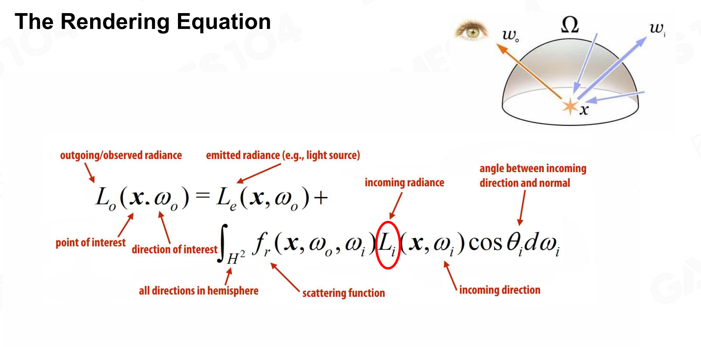
这里有几个要注意的点。
首先是余弦项，它的核心思想是：光线越是垂直照射到表面，单位面积接收的能量就越多。课程举的例子是，地球上同样是太阳光，赤道地区（接近垂直照射）比两极地区（掠射）要热得多。
其次是BRDF，这东西就是用来描述材质的。其数值上就表示：朝着观察者方向射出的能量去比上该点各个方向入射的总能量。BRDF 的具体形式决定了材质的质感（例如，漫反射、镜面反射、金属感等）。
渲染方程很明显非常完美，但我们在计算机能直接求解吗？我没记错的话，Games101会让我们实现一个简单的RayTracing，它事实上就是模拟渲染方程光线的反向传播（光路具有可逆性），但事实上即便是离线渲染，我们也只能用采样来近似（我记得似乎就只在半球上采样一次？）。而在游戏的实时渲染场景，这么一个渲染方程的求解，我们自然需要发明一些方法，当然因此也有很多挑战。
实时渲染面临的挑战
这些挑战是老师自己整理出来的。
第一个挑战是所谓的可见性（Visibility），其实就涉及到阴影。
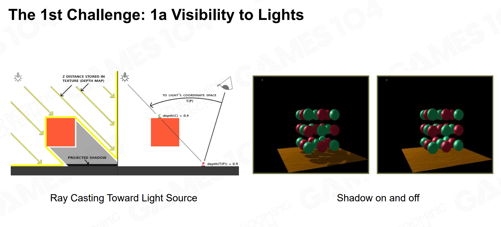
学过101应该知道最普遍的方法叫做ShadowMap。但这其实涉及到光源的多样性，例如我们可能除了平行光和点光源（自身需要6个ShadowMap）外，还有面光源。面光源会使问题复杂度急剧升高，因为光源自身的旋转和形态都会极大地影响着色结果，产生柔和的阴影（软阴影，202内讲的方法叫PCSS），这对于简单的可见性测试来说非常困难。
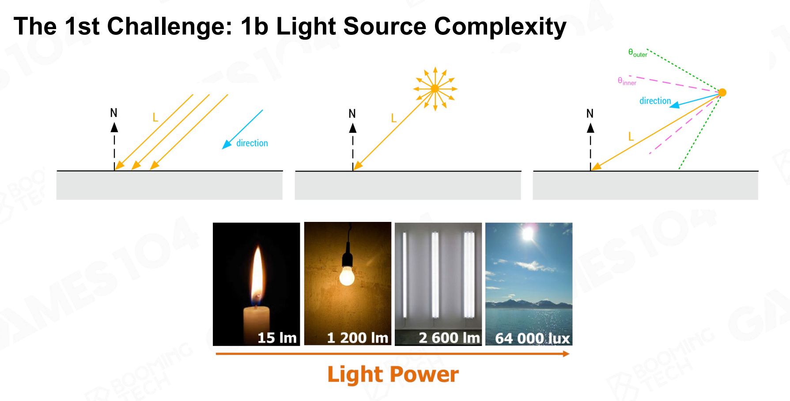
对应到渲染方程中，其实就是对于场景中每一点的Irradiance如何精确采样。事实上也可以在渲染方程中加上Visibility项。
第二个挑战是如何在硬件上高效计算涉及到Irradiance和材质（即BRDF）交互的积分。这东西反正我想想就头疼。
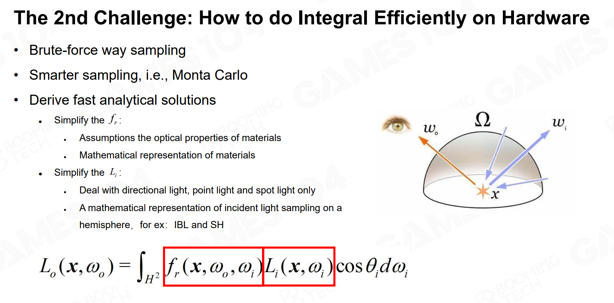
第三个挑战是间接光照，因为每个物体在吸收光后其实自身就是光源。所以如果真去模拟光线传播，事实上是无限递归的过程。
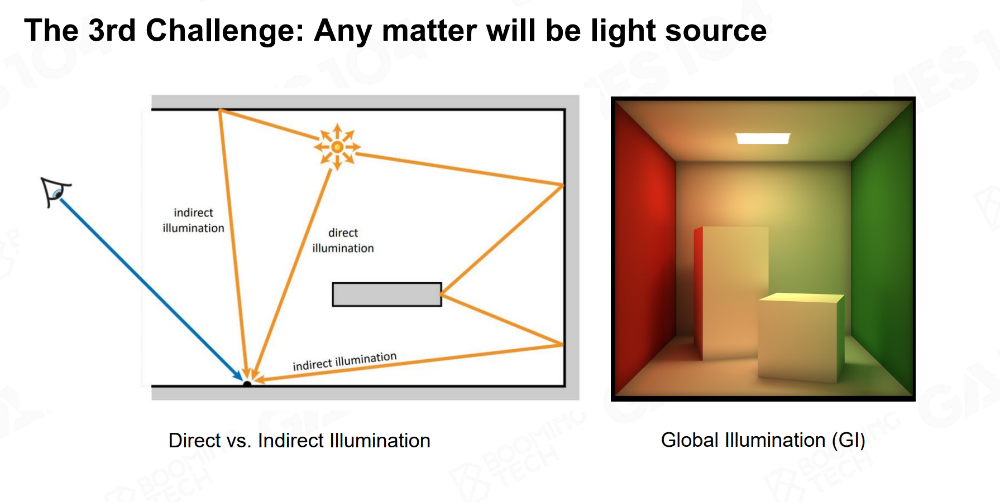
所谓的GI（全局光照）就是用来解决这种问题。
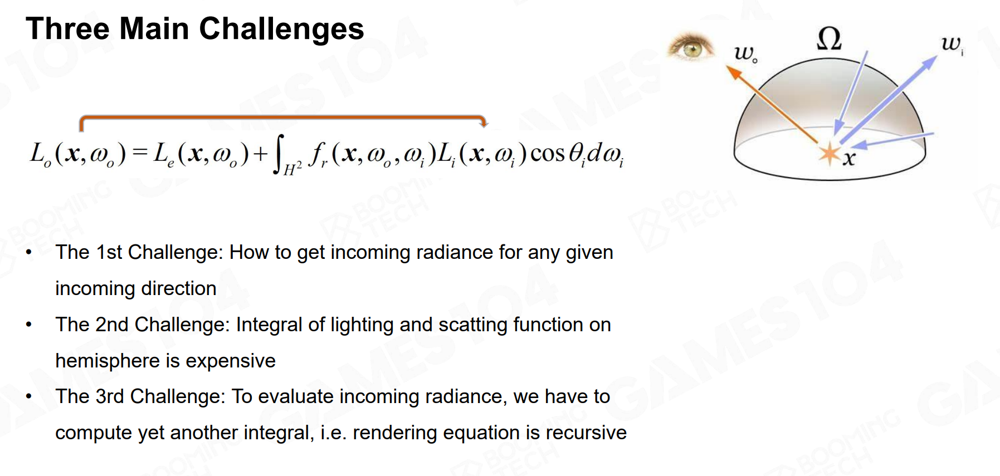
简化问题
光源相关
直接将光分成两个部分： - 主光：模拟场景中起主导作用的单一强光源，如太阳或灯泡，它能产生明显的明暗对比和高光。可以是方向光、点光源等； - 环境光：简单用一个常数来替代主光以外的irradiance的平均值。
这东西甚至在图形API里有支持：
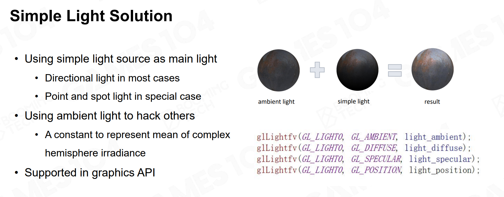
如果我们还想让某些金属材质得到镜面反射效果，我们可以用环境贴图（Environment Map）。
在渲染方程中，我们将一个点的半球面的光场分布模拟成一个常数ambient光线性叠加一个主光叠加环境贴图给出的高频信息。这就是最早的光照模型。
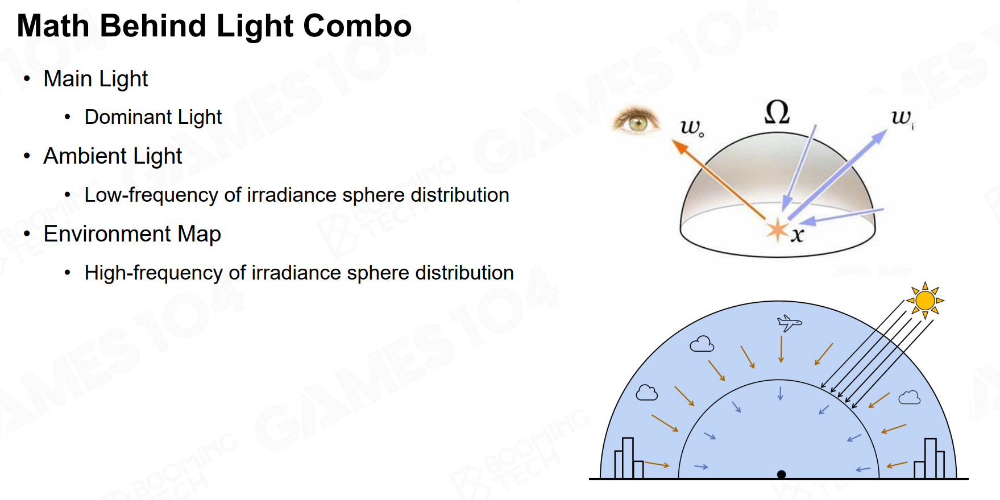
材质相关
在材质模型的发展史上，出现了一个非常重要且实用的流派——经验派。
Blinn-Phong模型是一个根据经验得出来的模型，它使用Ambient(环境光照)、Diffuse(漫反射)以及Specular（高光）来描述光照shading计算。
这个模型同样体现了光的可叠加性。
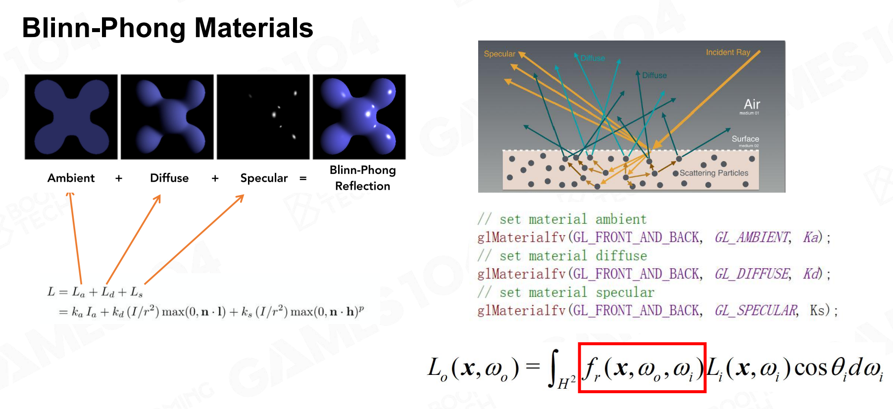
但这个模型存在一些问题。 - blinn-phong模型不遵守能量守恒，其能量可能会溢出（射入<射出）入射能量小于通过方程后算出的反射能量，假设进入能量为100反射出为101，看着数值相差不大，但如果我们使用ray tracing的话，光线不断bounce的情况下会使得能量不断增加，场景越来越亮。 - blinn-phong模型有一种强烈的塑料感，而不是真实感，无法用其表达复杂模型的细节。
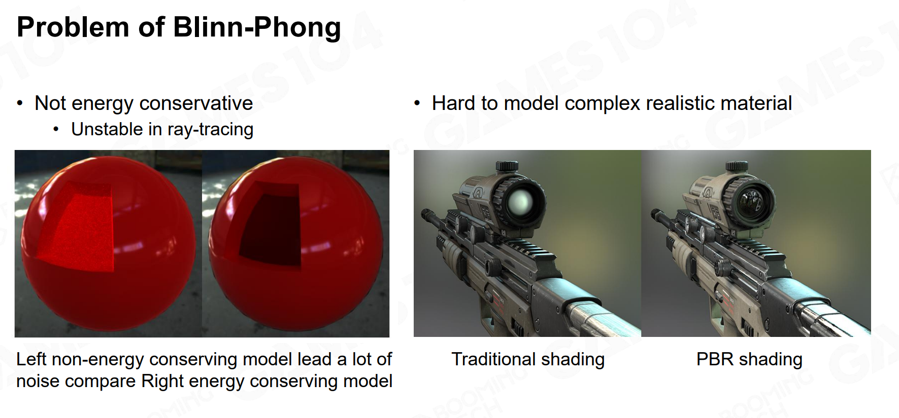
Shadow相关
Shadow其实就是光源的Visibility，游戏引擎最常用的解决方案是ShadowMap。
ShadowMap的思想应该再熟悉不过了，就是从光源处渲染一张深度图，然后在主Pass进行深度对比：
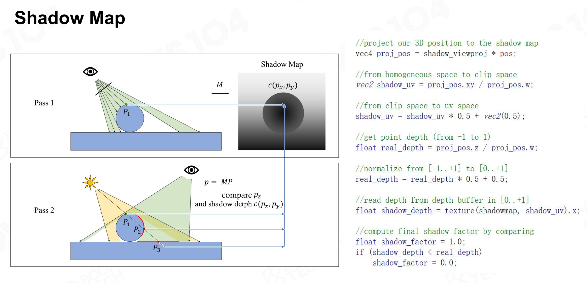
因为ShadowMap本身有分辨率，所以会产生一些走样，例如自遮挡问题。这时候可以直接加一个bias来hack，但可能出现物体与阴影之间出现”断层“的人脚浮空现象。
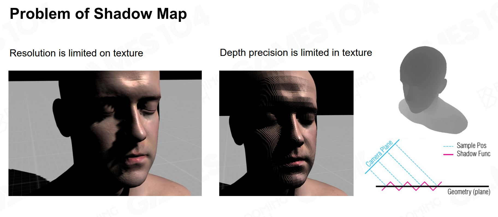
这样我们就有了一个基础的渲染方案（我自己的渲染器就这么写的），可以看到在Doom3里的效果还可以。
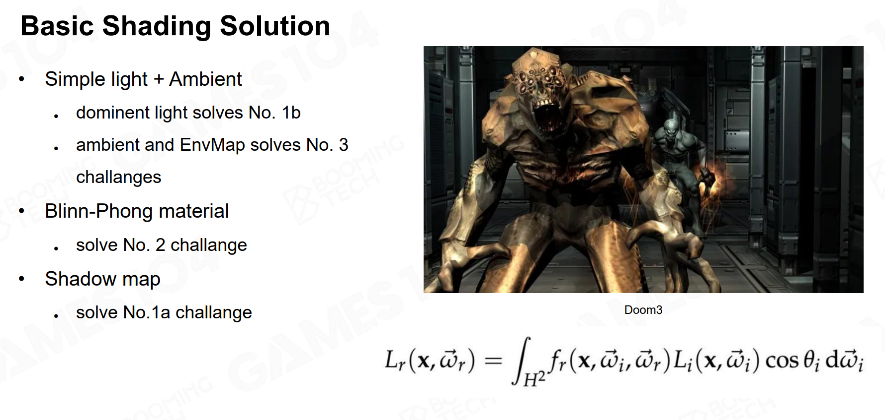
基于预计算的全局光照
一个对比图告诉你GI的重要性：
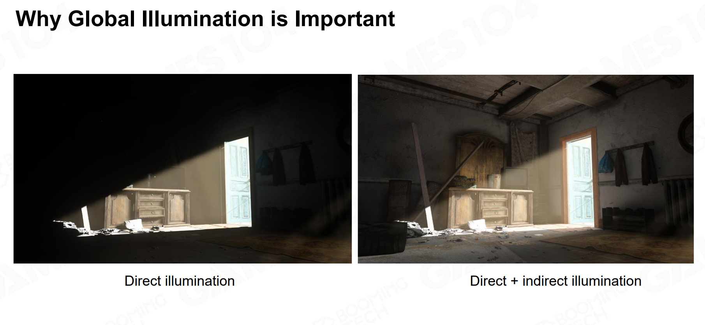
事实上就是间接光照的重要性。如果采用前面ambient的方案，事实上得到的GI很容易让画面出现平面感，因为现实中各个方向的间接光照是不同的。
但如果实时计算全局光照，则涉及到最开始介绍的三大挑战的问题，尤其是无限递归。因此考虑一种思想，就是空间换时间。
球谐函数SH
可以认为是球面上的“傅里叶基函数”，用来展开球面上的信号。任意定义在球面上的函数都可以展开为球谐函数的线性组合。（我第一次见到的应用是在3DGS中用来合成一个高斯的颜色）
基本形式如下，反正也看不懂：
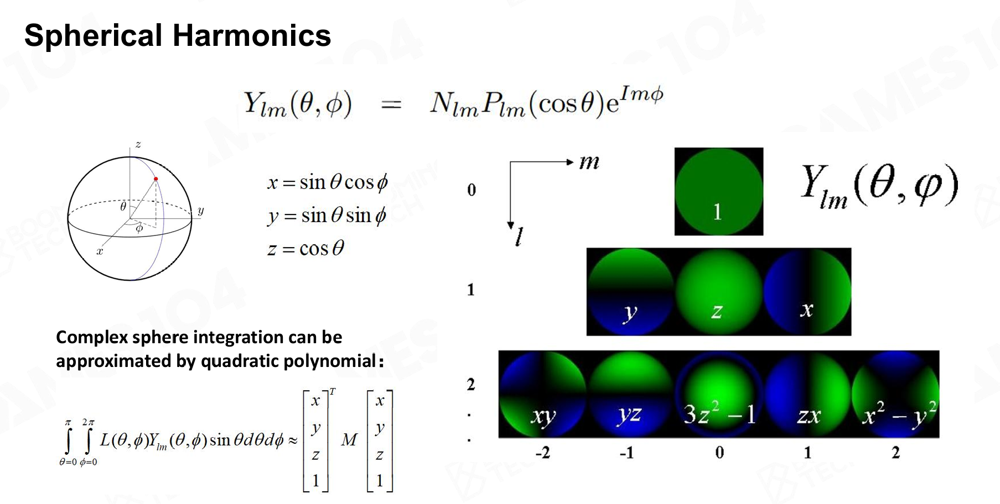
对于一个Shading Point的环境光的Irradiance，它是一个半球的采样区域，我们就可以使用 SH 来进行压缩。PPT里给出了只使用一阶球谐函数压缩Irradiance Probe的示例：
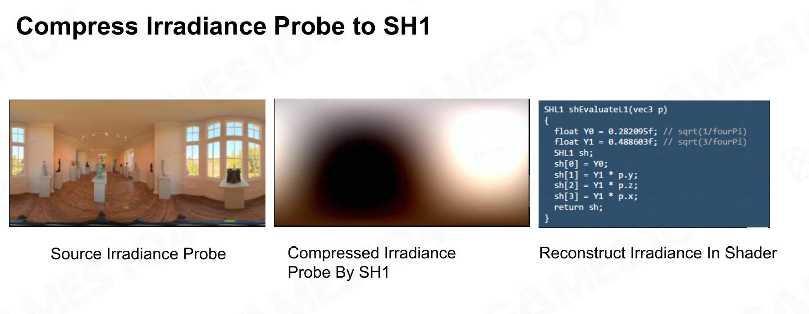
参数数量：三个通道配上四个系数，一共12个。
进一步压缩策略：
L0 (零阶系数): 代表平均光强，是HDR数据。使用 BC6H 这样的HDR压缩格式单独处理。 L1 (一阶系数): 代表方向光，其动态范围相对较小，是LDR数据。可以使用 BC7 或其他LDR格式压缩。
效果就是可以只使用一个RGBA信息（32bits）就可以表达一个点的环境光照信息。
Lightmap
其实大致想法很直接： - 将整个场景“拍进”一张巨大的2D贴图，每个点对应一个uv - 用离线方法预先计算所有表面点的Irradiance probe - 使用SH进行压缩 - 将SH的系数（或者压缩后的参数）存进巨大的贴图，就是lightmap
但其实第一步3D转2D的过程非常复杂，同时也只支持静态场景。所以这个方法还是优缺点分明的：
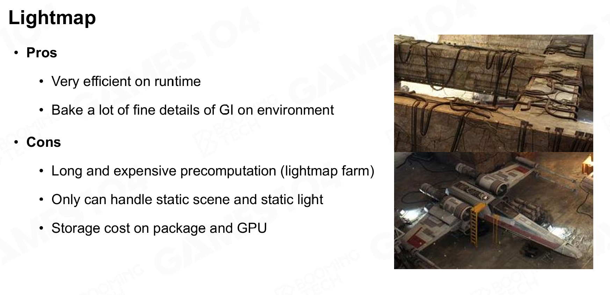
Light Probe
事实上想法也很直接，就是指定采样点。只有这些采样点会被离线bake，然后runtime的时候通过插值获得各个shading point的环境光信息。
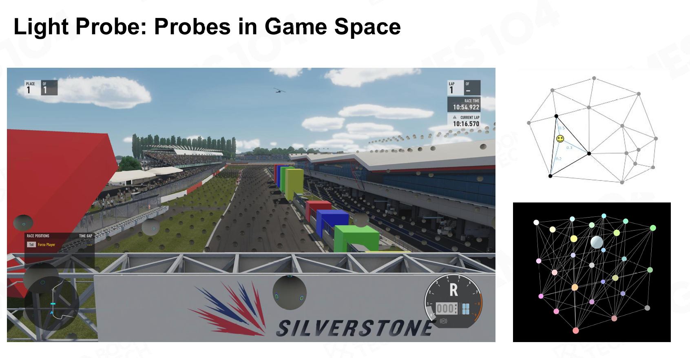
现代游戏倾向于自动化生成Probe的位置。
课程还提到了特殊的Probe：Reflection Probe，它的核心用途就是专门用于捕捉高频的镜面反射信息，因此精度高，但相应的部署也比较稀疏。
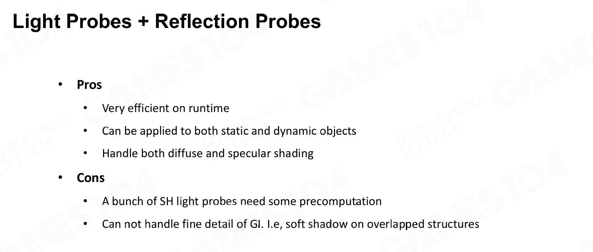
因为存储量显然比lightmap少，所以最后的质量自然也比不过lightmap。
基于物理的材质
微表面理论
任何看似光滑的表面，在微观尺度上都是由无数个法向各异的微小平面（microfacets）组成的。
对于PBR材质的第一影响就是，粗糙表面的反射光容易散射到各个方向，光滑表面的反射光更集中。
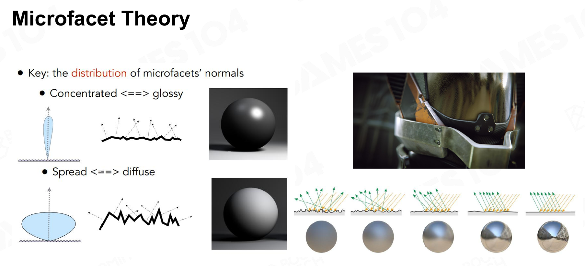
PBR的BRDF
我们知道大名鼎鼎的Cook-Torrance BRDF模型： $$ f = \dfrac{DFG}{4(\omega_i \cdot n)(\omega_o \cdot n)}. $$
它其实只精确建模了光线直接反射的部分。对于所谓的“次表面散射”，严格来讲需要使用BSSRDF，不过PBR的BRDF将其用一个简单的diffuse项进行近似： $$ f = \dfrac{c}{\pi}. $$
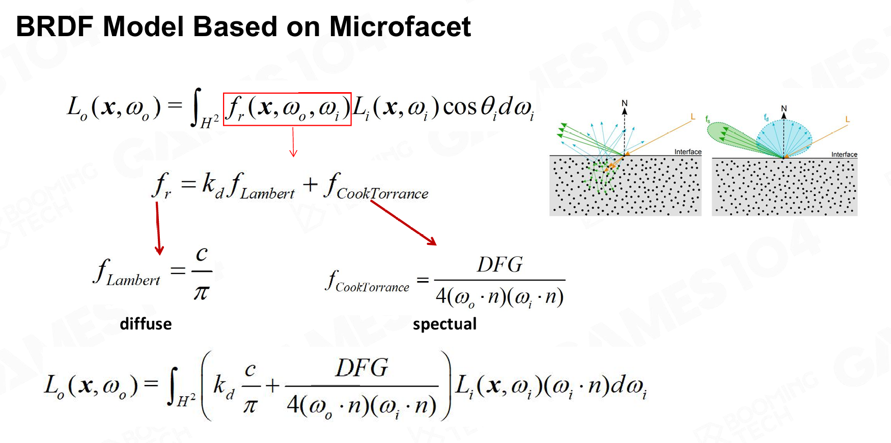
二者结合便是我们最经典的PBR的BRDF。接下来我们对DFG三项进行分析：
- 法线分布函数
最常用的是满足长尾性质的GGX模型，它描述的高光比Beckman更饱满：
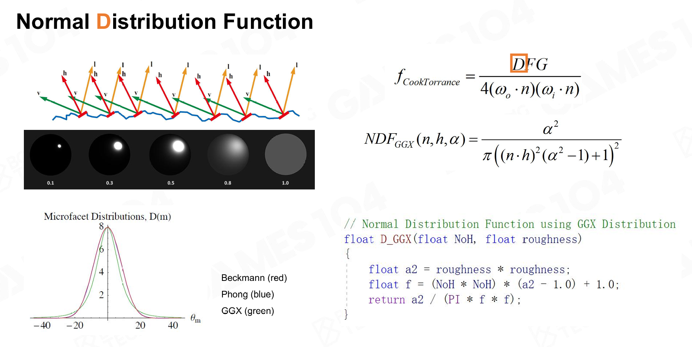
关键参数是粗糙度（Roughness）。法线越集中，粗糙度越小。
- 几何遮挡项
这个G项必须要和D项严格对应（事实上G项就是通过D项配合上能量守恒推导出来的，例如D项采用GGX，那么G项对应着Smith-GGX）
G项主要考虑两种遮挡情况：入射光线被遮挡和出射光线被遮挡。若采用Smith模型，则二者相同。
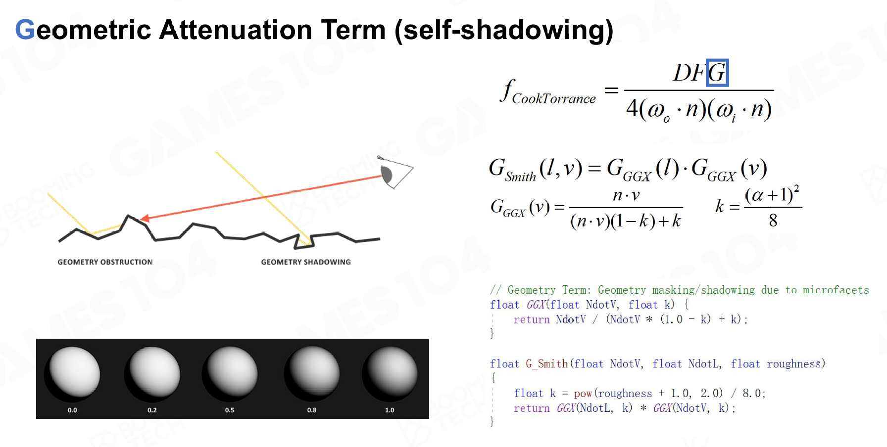
- 菲涅尔项
说实话我自己也不是很懂为什么有这种物理现象：视角越偏向物体表面的方向，反射光越多。（不过对应到公式上的表现是 v ⋅ h 变小导致F变大）但是菲涅尔项就是专门用来描述这种现象，它和物体粗糙度无关，和物体自身材质属性有关：
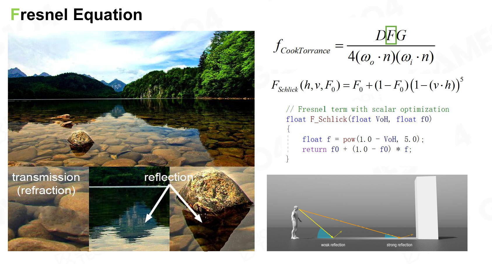
Disney原则的BRDF
它的主要贡献是原则化参数体系。